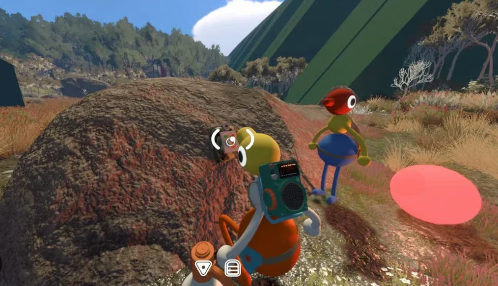

Quick answer: Start with a group of at least two. Choose a dependable host, pick the world setting for your usual party size, then use the game’s communication systems instead of rushing through clues.

Community gameplay screenshot supplied by the site owner. This independent guide is not affiliated with House House or Panic.
How saving works
- The host save is automatic.
- To continue the same journey later, the host should start the session again.
- Guests can rejoin the host world through friends or a Join Code.
How to join friends
- Look for an active friend game on your platform service.
- If that is unavailable, ask the host for the current Join Code.
- Mac App Store players use Join Codes because Game Center friend sessions are not supported.
First-hour advice
- Stay close while everyone learns the controls and communication tools.
- Describe colors, shapes and landmarks before pressing or carrying anything.
- Save map notes and puzzle clues for later instead of relying on memory.
Official sources
Release, platform, player-count, hosting and crossplay facts are checked against the official Big Walk FAQ and the official Steam page. Last checked August 27, 2026.